WITec 视频控制窗口是用于以下操作的主要用户界面：
- 显示视频图像
- 控制照明
- 管理物镜
- 设备定位
- 激光控制
- 光谱仪选择
- 控制其他设备...
在运行的软件中将鼠标移到控件上，按下 F1 键可获取上下文帮助！
顶栏
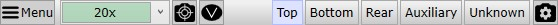
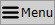
参见菜单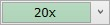
物镜选择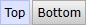
摄像机选择视频图像
视频实时视图显示当前所选摄像机的视频图像。
可以使用鼠标滚轮或按住键盘上的Ctrl键并拖动矩形来进行放大和缩小。
右侧栏
 参见 照明
参见 照明
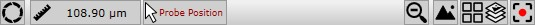
切换视场光阑
切换视场光阑的打开/对焦位置。右键单击打开 视场光阑/孔径光阑设置。
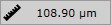
鼠标距离显示当前鼠标距离。可单击鼠标左键设置参考位置。
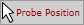
关闭监听在底栏中可能会看到一些鼠标指针后面跟着标签（例如探针位置）。
这意味着可以单击视频图像来设置或移动某些东西，例如探针位置。
如果单击此按钮，鼠标模式将被清除，因此任何软件组件都不会再监听位置。
缩小
放大镜图标表示已放大视频图像。单击以缩小。
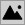
视频图像采集将当前视频图像以完整摄像机分辨率保存为新的位图到当前项目中。
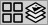
视频测量打开 视频测量窗口 以进行图像拼接和焦点堆栈。
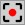
视频录像打开 视频录像窗口 以创建影片。
控制框
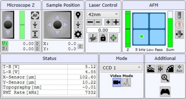
状态管理器

参见 状态管理器。